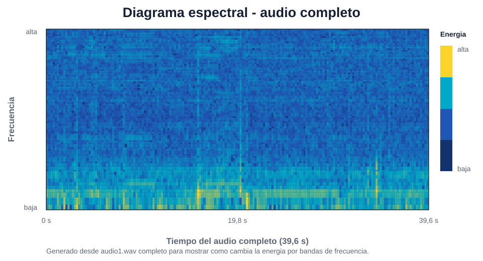
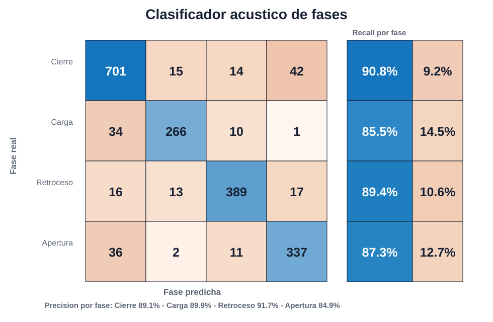
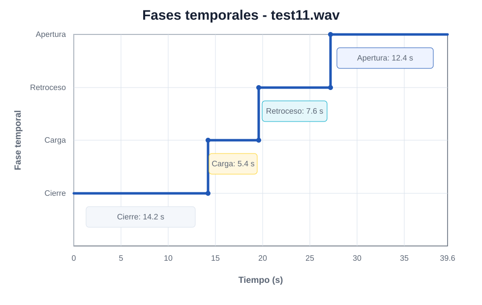

Captura acústica
Un micrófono registra el sonido del proceso de inyección sin modificar la máquina.
Como escuchar la máquina para reconocer su “firma sonora”.
Detección automática de fallos en procesos de inyección
Nuestro sistema escucha el ciclo de la máquina, divide el audio en ventanas muy cortas y estima en qué fase está el proceso para detectar comportamientos anómalos.
Para quien escanea el QR
La web resume el proyecto sin entrar en código: qué mide el sensor, qué fases reconoce, cómo toma decisiones en continuo y qué resultados obtiene con grabaciones reales de la inyectora.
Funcionamiento
Un micrófono registra el sonido del proceso de inyección sin modificar la máquina.
Como escuchar la máquina para reconocer su “firma sonora”.
El audio se fragmenta en muestras cortas para poder trabajar casi en tiempo real.
En vez de analizar todo de golpe, se mira el sonido en pequeños trozos.
Se extraen MFCC, energía, ZCR y rasgos espectrales que describen cada sonido.
Son números que resumen cómo suena cada fragmento: intensidad, tono y cambios.
El clasificador estima la fase y una máquina de estados evita saltos no físicos.
Comprueba que la secuencia tenga sentido dentro del ciclo real.
Fase seleccionada
La máquina se cierra y prepara el molde. El sonido suele ser estable y marca el inicio del ciclo.
Lectura del sensor
El sistema conserva el orden real del ciclo: cierre, carga, retroceso y apertura. Si una predicción propone un salto imposible, la decisión temporal lo bloquea y mantiene una salida más estable.
El sensor recoge el sonido de la inyectora sin intervenir en el proceso.
Análisis acústico
El espectrograma muestra cómo cambia la energía del sonido a lo largo del tiempo. En este ejemplo se representa el archivo completo de 39,6 s: las zonas amarillas concentran más energía y las azules indican menor intensidad.
En sencillo: es una “foto del sonido”. De izquierda a derecha avanza el tiempo, y de abajo a arriba aparecen frecuencias más altas.

Resultados
Mejor configuración SVM RBF con todas las características.
Porcentaje total de aciertos del modelo.
Medida global equilibrada entre las clases del ciclo.
Resume precisión y detección por fase sin favorecer solo a la clase más frecuente.
Clasificación continua revisada en grabaciones de prueba.
Audios donde el comportamiento detectado se considera coherente.
Es una tabla que compara lo que era realmente cada fase con lo que predijo el modelo. La diagonal indica los aciertos.
Es la evolución de la fase detectada a lo largo del audio, como una línea de tiempo del ciclo de la inyectora.


Demo
Esta demo aproxima el comportamiento del sistema real: parte de un audio ya cargado, como si estuviera llegando desde el sensor acústico, y actualiza la fase detectada a medida que avanza el ciclo de la máquina.
Abrir demo completaAudio cargado. Listo para reproducir.
Pulsa reproducir para ver cómo el sistema va siguiendo el ciclo de la máquina sobre un audio completo.
Multimedia

Diccionario rápido
Un sistema que usa el sonido de la máquina para entender qué está pasando.
Un modelo aprende patrones a partir de ejemplos y luego reconoce casos nuevos.
Una forma de convertir el sonido en números parecidos a cómo distinguimos timbres.
Mide cuántas veces la señal cambia de signo; ayuda a describir sonidos bruscos o suaves.
Una medida de la intensidad del sonido en cada fragmento de audio.
Un tipo de clasificador que separa datos en grupos, en este caso las fases del ciclo.